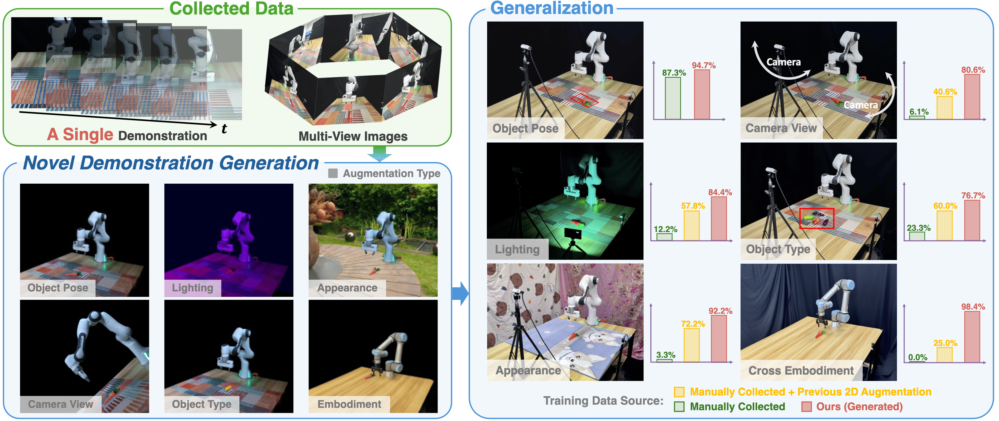
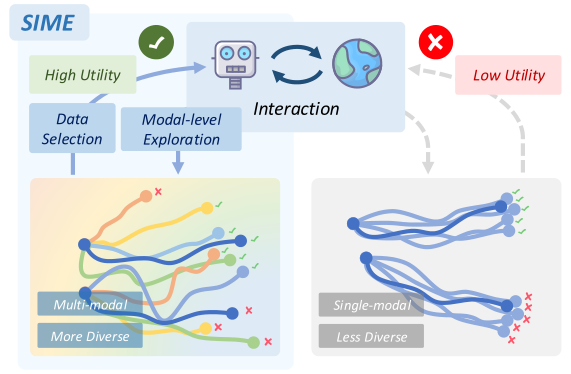
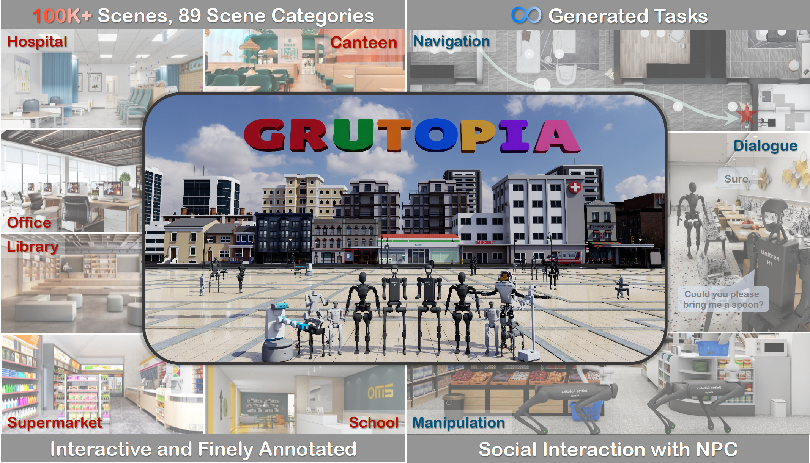

|
Wenye Yu Hi there! I am a first-year Ph.D. student at Machine Vision and Intelligence Group (MVIG), Shanghai Jiao Tong University, advised by Prof.Cewu Lu. I received my Bachelor's degree from the first session of Guozhi Class (held by Prof.Xiaoou Tang), Shanghai Jiao Tong University. Previously, I worked as a research intern at InternRobotics, supervised by Dr.Jiangmiao Pang. |
{kind=link}
News
|
ResearchMy research interest lies in Robotics and Embodied AI, with a particular interest in human-in-the-loop learning and generalizable robotic manipulation. Representative works are highlighted. |

|
ARMADA: Autonomous Online Failure Detection and Human Shared Control Empower Scalable Real-world Deployment and Adaptation
Wenye Yu, Jun Lv, Zixi Ying, Yang Jin, Chuan Wen†, Cewu Lu† In submission, 2025 project page / paper / code ARMADA is a multi-robot deployment and adaptation system with human-in-the-loop shared control, featuring an autonomous online failure detection method named FLOAT. It enables scalable deployment of pretrained policies and thereby expedites policy adaptation to novel scenarios. |
|  |
Novel Demonstration Generation with Gaussian Splatting Enables Robust One-Shot Manipulation
Sizhe Yang*, Wenye Yu*, Jia Zeng, Jun Lv, Kerui Ren, Cewu Lu, Dahua Lin, Jiangmiao Pang† Robotics: Science and Systems (RSS), 2025 project page / paper / code RoboSplat is framework that leverages 3D Gaussian Splatting (3DGS) to generate novel demonstrations for RGB-based policy learning in a one-shot manner, enabling robust performance across six types of visual generalization in the real world. |
|  |
SIME: Enhancing Policy Self-Improvement with Modal-level Exploration
Yang Jin*, Jun Lv*, Wenye Yu, Hongjie Fang, Yong-Lu Li, Cewu Lu† IEEE/RSJ International Conference on Intelligent Robots and Systems (IROS), 2025 project page / paper / code With modal-level exploration, the robot can generate more diverse and multi-modal interaction data. By learning from the most valuable trials and high-quality segments from these interactions, the robot can effectively refine its capabilities through self-improvement. |

|
Learning H-Infinity Locomotion Control
Junfeng Long*, Wenye Yu*, Quanyi Li*, Zirui Wang, Dahua Lin, Jiangmiao Pang† Conference on Robot Learning (CoRL), 2024 Best Poster Award at CoRL 2024 LocoLearn Workshop project page / paper We propose H-Infinity Locomotion Control, an adversarial framework for quadrupedal robots which enhances their robustness against external forces with a performance guarantee. |
|  |
GRUtopia: Dream General Robots in a City at Scale
Hanqing Wang*, Jiahe Chen*, Wensi Huang*, Qingwei Ben*, Tai Wang*, Boyu Mi*, Tao Huang, Siheng Zhao, Yilun Chen, Sizhe Yang, Peizhou Cao, Wenye Yu, Zichao Ye, Jialun Li, Junfeng Long, Zirui Wang, Huiling Wang, Ying Zhao, Zhongying Tu, Yu Qiao, Dahua Lin, Jiangmiao Pang† arXiv, 2024 project page / paper / code We proposed GRUtopia, the first simulated interactive 3D society designed for various robots. It features (a)GRScenes, a dataset with 100k interactive and finely annotated scenes. (b) GRResidents, a LLM driven NPC system. (c) GRBench, a benchmark posing moderately challenging tasks. |
Awards
|
ServiceI served as reviewer for the following conferences:
|
Miscellanea |
|
This homepage is designed based on Jon Barron's website and deployed on Github Pages. The profile photo is taken by Annie Wang. |